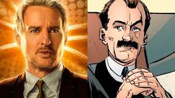

minha serie favorita
loki
quando loki acaba fogindo dos vingadores acaba sendo capturado pela avt uma organização secreta que cuida da linha do tempo

personagems
- loki
- kang
- loki versão galango
- loki versão mulher
- funcionario da avt
quando loki e capturado pela avt ele acaba sendo julgado como um criminoso que mudou a linha do tempo
os mais bonitos da serie
- loki
https://img.olhardigital.com.br/wp-content/uploads/2021/02/Loki.jpg
- loki mulher
src="https://img.olhardigital.com.br/wp-content/uploads/2021/06/lady-loki-2.jpg"
- funcionario da avt
https://disneyplusbrasil.com.br/wp-content/uploads/2021/06/Mobius-M.-Mobius-Loki.jpg
- loki galango
https://1.bp.blogspot.com/-7hQALdB3UKE/YOZECeLus1I/AAAAAAACOlU/fdz5xscG-qMCU8Teg4sKD4ovwGIII3GFACLcBGAsYHQ/s0/jacaloki.jpg
- kang
https://www.otempo.com.br/image/contentid/policy:1.2864578:1683498962/image-Primeira-variante-de-Kang-pode-ter-aparecido-ha-10-anos-no-MCU.jpg?f=3x2&w=1224